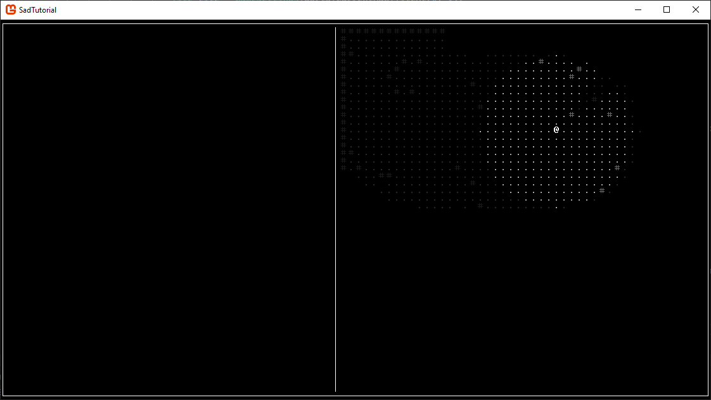

In this brief chapter we're going to set up a field of view system, so that the player can only seen what is immediately around their character instead of the whole map at once. Before we get started, go to the NuGet package manager (Tools -> NuGet Package Manager -> Manage NuGet Packages for Solution), go to Install, and search for GoRogue by Chris3606 and install the latest stable build. This library has a bunch of useful functions for making roguelikes, so we'll be using it quite a bit in the future. Now that you have GoRogue installed, setting up the FOV requires surprisingly little code, so let's jump right into it.
In Data/World.cs create three new variables: a GoRogue.FOV, a GoRogue.MapViews.LambdaMapView<bool>, and a List<Coord>. The first handles all the FOV calculations, the second stores our map as a bool array stating whether each tile allows vision to pass through it, and the third will be our view history. Next up create a function called ResetFOV(). The way we initialize the lambda function is a little complicated so I'll put the code here.
To create the MapView we pass in our maps width and height, and we create a lamba function accepting a Coord. Inside the function body we check to see if there's a tile at the requested position (pos), and if so return the opposite of BlocksLOS, because it wants to know if vision is allowed rather than forbidden. Finally we initialize the FOV by passing in the MapView, and we clear the vision history. Next up create a function called UpdateFOV(). In it, run PlayerFOV.Calculate, passing in your players position and the desired vision radius, and iterate through PlayerFOV.NewlyUnseen, adding them all to SeenTiles. Finally throw a call to ResetFOV and then UpdateFOV at the end of the World constructor and we're done with this file.
This change is even easier than the changes to World! In UI/UI_GameArea.cs, in the for-loops where your tiles are printed to SquareCon, after checking to make sure the tile isn't null before printing it check to see if PlayerFOV.CurrentFOV contains a new Coord with the x and y of the tile. If it does contain it, print the tile. If it doesn't, check to see if SeenTiles contains the coord instead, and if it does print the tile using GetAppearance().GetDarker().GetDarker(). You can do only one call to GetDarker if you like, but the double makes the difference between remembered tiles and currently seen tiles more obvious. All that's left to do is put a call to UpdateFOV somewhere. If you don't care about the cost of calculating it every frame you can throw it anywhere in the Update of UI_GameArea, otherwise stick it in Input after successfully moving the player.
If you've followed all the steps, and I didn't forget anything, then you should now see something similar to the following after moving around a bit!

Chapter 02: Maps and Actors
Chapter 04: Monsters and Combat
Back to Index